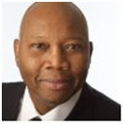

Walter Slade Jr.
Leadership Coaching Expertise
Walter Slade brings more than 30 years of experience in coaching, advising, and collaborating with business leaders, teams, and individuals to help them be their best while doing their best work. He has worked locally and globally with diverse clients in the HR, pharmaceuticals, manufacturing, operations, commercial, finance, legal, IT, supply chain, procurement, safety, engineering, high technology, telecommunication and non-profit.
Walter’s openness, passion, and willingness to make things happen has helped make him a successful coach, HR professional, and leader in three global business industries and at all levels of an organization. Although he has worked in various organizational roles, he truly enjoys working in “hands on” assignments where he can be a “thinking and doing” partner.
Walter is known for seeing the best and the potential in each individual. Like John Maxwell, he sees himself as a “lid lifter,” opening minds and hearts to other possibilities. This mindset is rooted in his childhood in Newark, New Jersey. It was there that Walter learned:
- To see others and himself beyond the popular negative stereotypes of inner-city African American youth, especially males
- The value of community and the importance of individual and collective accountability
- That change starts at home (self first)—and so does leadership
Background and Training
Walter earned his B.A. from Drew University in New Jersey. He is a SHRM-Certified Senior Human Resources Professional, a Certified Professional Coach and a ELI Master Practitioner from the Institute for Professional Excellence in Coaching (IPEC). Walter also is a volunteer coach for the New Start Career Network, which helps New Jersey’s long-term unemployed job seekers.
Engage Equip Encourage Excel
SladeCOACH, LLC partners with Leaders to Be their Best and Do their Best work Individually and Collectively.
Leadership is simply interaction where influence occurs. In fact, the first person you lead is yourself!
So you are a Leader, either by choice or default. The question isn’t if you’re a Leader, its how will you lead?
Lets partner together to help you motivate, inspire and bring the greatness in yourself and others.
Partnership Ideas
- Individual One-to-One Sessions -We’ll customize a plan based on your specific goals and objectives.
- Group/Team Sessions - These sessions are particularly beneficial in improving collaboration, effectiveness and efficiency.
- Workshops and Speaking – Whether your need is skill building or just shared learning.
Specialties
- Coaching, Consulting & Partnering
- Leader and Team Development
- Change Leadership & Implementation
- Culture & Engagement
- Organization Effectiveness & Development
- Inclusion & Diversity
- Performance Management
- Program Leadership and Implementation
Testimoninals
-
"Walter is a first-class Leadership and HR consultant and adviser, and a valued resource to our entire management team. He is able to seamlessly adapt to nearly any personnel situation or need that arises across our small business. He gives deep thought to our challenges and returns with insightful advice based on his many years of experience in the HR and Leadership space. His ability to coach on both a one-on-one and group setting allows us to constantly improve in a flexible and efficient manner."
-
"Walter played a pivotal role in helping me find the courage and clarity that was buried within myself during my recent career change. His advice, coaching and encouragement helped me a great deal during an extremely challenging time but the questions and outline that he helped me discover through our discussions was what I needed and ultimately helped motivate me to take a chance on change. For that, I am grateful and invite everyone the opportunity to be enlightened by him as well!"
-
"Walter has been a tremendous support in coaching pastors in leadership principles, organizational management, and change implementation. I highly recommend him both in leadership coaching but also in board consultation."
-
"I’d had the pleasure of working with Walter as a career coach. Walter is a great listener and has a natural talent for asking questions that will help you to find the answers within yourself. Think about that, a valuable gift he offers to get you thinking about internal questions you’ll need to answer for yourself.
Walter is a great coach to have in your corner and to bounce ideas off. His quote about “playing chess and not checkers” will be with me forever when assessing strategy for unlocking the best that I can be."
- "I had the pleasure of meeting Walter as a client of Lee Hecht Harrison. From the moment I met Walter, I appreciated his ability to connect with me. He has a very empathetic and easy-going coaching style that puts you at ease immediately. He was able to guide me to make decisions and move in a positive direction. He knew the questions to ask and how to probe to make sure we were focusing on the right plan of action. I was lucky to benefit from Walter's expertise. I would recommend Walter to anyone looking for a coach or a mentor. He is outstanding!"
- "Walter is an outstanding coach with a wealth of experience, deep understanding of human interactions and how to make the most ofthose interactions. Walter's insight has been valuable in re-shaping my thinking and ability to boil down complex and emotional situations into simple and practical hypotheses to be tested. Walter has a way of connecting with people in a very genuine way that allows you to build trust with him and quickly seek his advice and thoughts. I thank him for the many situations that he has helped me navigate when I didn't know what to do, had doubts about my approach, or was just curious as to what he had to say. Walter, I thank you for your advice, your collaborative nature and most of all for being a good friend."
- "Walter is a rare leader who is able to think and act strategically to produce significant and measurable business results. He is an inspirational voice who can rally a large organization to common good and shared success. He has an incredible ability to apply his extensive OD capabilities (inclusion, coaching, change execution, etc) within an organization to help individuals and the collective to do their best work together. Not only is he an expert but he is a wonderful human being who can connect and inspire and organization."